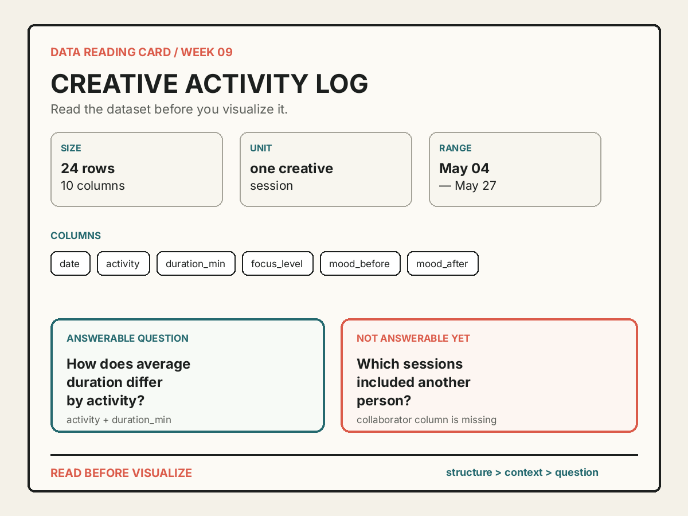

데이터를 그리기 전에 읽을 수 있다는 사실을 두 결과물로 증명하기
오늘의 실습 목표
- CSV를 pandas의 DataFrame으로 불러오되 원본 파일을 수정하지 않을 수 있습니다.
head(),shape,columns,dtypes,isna().sum()의 결과를 확인할 수 있습니다.- 데이터의 제목, 출처, 이용 조건, 관찰 단위, 시간 범위를 기록할 수 있습니다.
- 실제 행·열·값 하나를 골라 데이터 안에서 무엇을 뜻하는지 자신의 문장으로 설명할 수 있습니다.
- 현재 열로 답할 수 있는 질문과 누락된 정보 때문에 답할 수 없는 질문을 각각 작성할 수 있습니다.
- 데이터 읽기 카드 HTML을 만들고 새 런타임 전체 실행에서 자동 검사 PASS를 확인할 수 있습니다.
자동 검사 PASS + 두 파일 제출 = 즉시 귀가
0-6분의 공통 안내가 끝나면 각자 자신의 속도로 진행합니다. 자동 검사 PASS를 확인하고 .ipynb와 .html 두 파일 제출을 마친 학생은 남은 수업 시간을 기다리지 않고 즉시 귀가합니다.
속도를 채점하지 않습니다. 작업 속도와 남은 수업 시간은 평가에 반영하지 않습니다. 빠르게 끝내기 위해 설명을 비우는 것보다 모든 조건을 정확히 증명하는 것이 중요합니다.
- 01준비사본 저장과 파일명
- 02기준 실행수정 전 데이터 확인
- 03맥락 기록출처·단위·기간
- 04구조 검사행·열·형식·빈 값
- 05질문 작성가능한 질문과 한계
- 06카드 생성독립 HTML 결과물
- 07검증새 런타임 전체 실행
- 08귀가두 파일 제출 확인
EXIT GATE
완료 문구 + 실행 결과가 보이는 노트북 + 열리는 HTML
세 항목을 교수가 확인하면 실습을 마칩니다. 예시와 같은 문장을 복사하는 것이 아니라 선택한 데이터에 맞는 설명을 작성해야 합니다.
이번 주에 만들 수 있는 결과물

| 결과물 | 증명하는 것 | 제출 파일명 |
|---|---|---|
| 실행 가능한 Colab 노트북 | CSV를 불러오고 행·열·자료형·결측값을 점검한 과정, 자신의 설명, 자동 검사 PASS | week09_학번_이름.ipynb |
| 데이터 읽기 카드 HTML | 제목·출처·이용 조건·관찰 단위·시간 범위, 구조, 실제 값, 가능한 질문과 한계를 읽을 수 있는 독립 문서 | week09_학번_이름_data_reading_card.html |
귀가 조건: 제출 전에 열 가지 확인
- 노트북 파일명
week09_학번_이름.ipynb형식으로 바꾸었습니다. - 제출 정보STEP 1의 학번과 이름을 자신의 정보로 바꾸었습니다.
- 데이터 선택수업용 CSV 또는 개인정보를 제거한 자신의 CSV가 정상적으로 열립니다.
- 맥락 기록제목, 출처, 이용 조건, 관찰 단위, 시간 범위를 모두 작성했습니다.
- 구조 확인행, 열, 자료형, 결측값을 출력하고 그 의미를 확인했습니다.
- 실제 값 설명존재하는 행·열·값 하나를 선택하고 20자 이상의 문장으로 설명했습니다.
- 가능한 질문현재 데이터로 답할 수 있는 질문과 필요한 열 한 개 이상을 적었습니다.
- 한계 질문답할 수 없는 질문과 추가로 필요한 정보를 각각 15자 이상 적었습니다.
- 새 런타임 검증런타임을 다시 시작하고 모두 실행해
🎉 WEEK 09 DATA READING COMPLETE를 확인했습니다. - 두 파일 제출실행 결과가 포함된
.ipynb와 브라우저에서 열리는.html을 제출했습니다.
자동 검사는 질문의 미적 취향을 채점하지 않는다
검사는 학번·이름, 데이터 출처와 이용 조건, 행·열의 최소 구조, 질문 길이, 실제 열의 존재, 원본 보존, HTML 생성과 파일명을 확인합니다. 어떤 주제가 더 흥미로운지, 어떤 문장이 더 세련되어 보이는지는 자동으로 판정하지 않습니다.
50분 진행 기준
| 시간 | 단계 | 완료 표시 |
|---|---|---|
| 0-6분 | 공통 안내, 노트북 열기, 사본 저장, 파일명 변경 | 자신의 Drive 사본이 열림 |
| 6-12분 | 수정 전 STEP 0부터 STEP 4까지 기준 실행 | 표 미리보기와 예시 카드가 보임 |
| 12-20분 | 학번·이름, 제목·출처·이용 조건·관찰 단위·시간 범위 작성 | STEP 1 출력에 자신의 정보가 보임 |
| 20-30분 | 여섯 가지 구조 출력 읽기, 실제 행·열·값 선택과 설명 작성 | STEP 2와 STEP 3 출력 확인 |
| 30-38분 | 답할 수 있는 질문·필요한 열, 답할 수 없는 질문·누락 정보 작성 | 두 질문이 데이터 범위와 맞음 |
| 38-44분 | HTML 카드 생성, 내용과 줄바꿈, 실제 값 설명 확인 | 카드가 화면에 보이고 파일이 생성됨 |
| 44-48분 | 새 런타임에서 모두 실행, 자동 검사 PASS 확인 | 완료 문구가 마지막 셀에 보임 |
| 48-50분 | 노트북과 HTML 다운로드, 두 파일 업로드 상태 확인 | 제출 확인 후 즉시 귀가 |
시간표는 기다려야 하는 시각이 아니라 길을 잃지 않기 위한 기준입니다. 32분에 모든 조건을 충족했다면 그때 검사를 실행하고 두 파일을 제출할 수 있습니다. 반대로 시간이 더 필요한 학생은 50분까지 같은 목표를 자신의 속도로 수행합니다.
STEP 0 · 노트북 사본과 파일명 준비
- 위의 Colab에서 미션 노트북 열기를 누르거나 내려받은 파일을 Colab에 업로드합니다.
- 파일 → Drive에 사본 저장을 선택합니다.
- 상단 파일명을 눌러
week09_학번_이름.ipynb로 바꿉니다. - 처음에는 코드를 수정하지 않고 STEP 0부터 STEP 4까지 한 번 실행합니다.
노트북이 Colab에서 직접 열리지 않을 때
Starter notebook을 내려받은 뒤 Google Colab ↗의 업로드 탭에서 .ipynb를 선택합니다. 브라우저가 파일 내용을 문자로 보여 주면 뒤로 돌아와 링크의 내려받기를 사용합니다.
사본을 저장해야 하는 이유
원본 템플릿은 모든 학생이 함께 사용하는 출발점입니다. Drive 사본을 만들면 자신의 입력과 실행 결과가 개인 파일에 저장되고, 제출할 노트북의 소유권과 파일명이 분명해집니다.
STEP 1 · 수정 전 기준 실행
템플릿은 수업용 CSV가 보이지 않으면 같은 24개 기록을 자동으로 생성합니다. STEP 0부터 STEP 4까지 순서대로 실행했을 때 앞의 다섯 행, (24, 10), 열 이름, 자료형, 결측값 개수와 예시 카드가 보이면 환경이 정상입니다.
기준 출력shape (rows, columns): (24, 10)
기준 출력focus_level · missing 2
기준 출력카드 저장 완료: week09_학번_이름_data_reading_card.html
NameError가 나오면 무엇을 확인하는가?
현재 셀보다 위의 셀이 실행되지 않았을 가능성이 큽니다. STEP 번호가 낮은 셀부터 차례대로 실행합니다. 임의로 변수나 함수를 새로 만들기보다 런타임 → 다시 시작 및 모두 실행으로 순서를 복구합니다.
STEP 2 · 데이터 맥락과 질문 작성
노트북의 STEP 1에서 EDIT로 표시된 값만 바꿉니다. 수업용 자료를 쓰면 source_choice = "provided"를 유지합니다. 자신의 CSV를 쓰는 경우에만 "own"으로 바꾸고 파일을 업로드한 뒤 제목·출처·이용 조건·관찰 단위·시간 범위를 실제 자료에 맞게 모두 수정합니다.
| 항목 | 작성할 내용 | 피해야 할 내용 |
|---|---|---|
dataset_title | 표가 담은 대상을 드러내는 짧은 제목 | data, final처럼 의미 없는 이름 |
dataset_source | 기록자 또는 제공 기관과 원본 위치 | 인터넷처럼 찾을 수 없는 표현 |
dataset_license | 허용된 이용 범위 또는 공개 라이선스 | 확인하지 않은 자유 이용 주장 |
observation_unit | 한 행이 대표하는 대상 | 열 이름의 나열 |
time_range | 기록 시작일과 종료일 또는 기준 시점 | 최근, 예전처럼 범위가 모호한 말 |
자신의 CSV를 사용해도 되는가?
가능합니다. 단, 최소 5행 4열이며 수치형 열과 문자 또는 범주형 열을 각각 하나 이상 포함해야 합니다. 이름, 전화번호, 이메일, 정확한 주소·위치처럼 다른 사람을 식별할 수 있는 정보는 제거합니다. 출처와 이용 조건을 모르면 수업용 CSV를 사용합니다.
“수업용 예시 데이터”의 이용 조건은 왜 적는가?
작은 연습 파일도 누가 제공했고 어디까지 사용할 수 있는지 남기는 습관을 만들기 위해서입니다. 공개 데이터나 외부 창작물을 사용할 때 같은 위치에 기관명, 원본 주소, 라이선스를 기록할 수 있습니다.
STEP 3 · 구조 검사와 실제 값 설명
STEP 2 코드 셀은 원본 파일의 바이트를 기억한 뒤 pd.read_csv(source_path)로 DataFrame을 만듭니다. 이어서 앞부분, 크기, 열 이름, 자료형, 결측값을 출력합니다. 이 셀은 값을 삭제하거나 바꾸지 않습니다.
preview = df.head()
dataset_shape = df.shape
column_names = df.columns.tolist()
column_types = df.dtypes.astype(str).to_dict()
missing_counts = df.isna().sum().astype(int).to_dict()STEP 3에서는 실제로 존재하는 행과 열을 하나 고릅니다. 예를 들어 selected_row_index = 1, selected_column = "duration_min"을 선택했다면 값 55를 보고 “두 번째 창작 활동이 55분 동안 이어졌다”라고 설명합니다. 카드가 인덱스·열 이름·원래 값을 자동으로 표시하므로, 설명 문장에는 숫자나 코드 표기를 그대로 반복하지 않아도 됩니다. 현실에서 무엇을 뜻하는지 자연스럽게 적습니다.
KeyError가 나오면 무엇을 확인하는가?
selected_column의 철자와 대소문자가 columns 출력에 있는 이름과 정확히 같은지 확인합니다. duration min과 duration_min은 다른 이름입니다. 복사할 때 따옴표 안에 적습니다.
선택한 값이 NaN이어도 되는가?
가능하지만 “값이 없다”에서 멈추지 않습니다. 해당 관찰의 그 변수가 기록되지 않았으며, 그것이 0과 다르다는 점을 설명해야 합니다. 처음에는 의미가 분명한 실제 값을 고르는 편이 쉽습니다.
STEP 4 · 답할 수 있는 질문과 답할 수 없는 질문
답할 수 있는 질문은 현재 표의 열과 값으로 확인할 수 있어야 합니다. 필요한 열을 needed_columns 목록에 정확한 이름으로 적습니다. 답할 수 없는 질문은 현재 데이터에 없는 정보를 요구해야 하며, 어떤 열이나 기록이 더 필요한지도 함께 설명합니다.
| 판정 | 질문 | 이유 |
|---|---|---|
| 답할 수 있음 | 활동 종류에 따라 지속 시간은 어떻게 다른가? | activity와 duration_min이 있음 |
| 답할 수 있음 | 참고 자료를 사용한 활동은 몇 개인가? | used_reference가 있음 |
| 아직 답할 수 없음 | 다른 사람과 함께하면 집중도가 높아지는가? | 함께한 사람을 기록한 열이 없음 |
| 아직 답할 수 없음 | 날씨가 기분 변화에 영향을 주는가? | 날씨 정보가 없음 |
질문을 쓰는 것과 답을 계산하는 것은 다르다
이번 주에는 “어떤 열이 있으면 이 질문을 검토할 수 있는가?”까지 판단합니다. 실제 평균, 합계, 그래프는 아직 만들지 않습니다. 현재 데이터만으로 인과관계를 증명할 수 있다는 표현도 사용하지 않습니다.
좋은 답할 수 없는 질문을 고르는 방법
현재 열 목록을 먼저 읽고, 자신의 관심과 연결되지만 아직 기록하지 않은 변수를 하나 찾습니다. 질문과 누락 정보가 정확히 대응해야 합니다. “날씨와 집중도의 관계”를 묻는다면 필요한 정보는 날짜가 아니라 날씨 상태 또는 기상 데이터입니다.
STEP 5 · HTML 카드 생성과 내용 확인
STEP 4 코드는 작성한 정보와 DataFrame 검사 결과를 HTML 문자열로 조립한 뒤 Path(output_filename).write_text(...)로 저장합니다. 카드가 노트북 안에 보이는 것과 왼쪽 파일 패널에 .html 파일이 생기는 것을 모두 확인합니다.
- 제목과 작성자 정보가 자신의 내용인지 확인합니다.
- 행·열 수와 열 이름이 STEP 2 출력과 같은지 확인합니다.
- 출처·이용 조건·관찰 단위·시간 범위가 비어 있지 않은지 확인합니다.
- 두 질문과 실제 값 설명이 카드 안에서 끝까지 보이는지 확인합니다.
- Colab 왼쪽 파일 패널에서 HTML을 내려받아 브라우저로 한 번 엽니다.
HTML 파일을 눌렀는데 코드 문자만 보일 때
Colab의 파일 미리보기는 HTML을 웹페이지로 실행하지 않고 문자로 보여 줄 수 있습니다. 파일 오른쪽의 점 세 개 메뉴에서 다운로드한 뒤 컴퓨터의 브라우저로 엽니다. 확장자가 .html인지도 확인합니다.
STEP 6 · 새 런타임 전체 실행과 PASS
- 런타임 → 런타임 다시 시작을 선택합니다.
- 런타임 → 모두 실행을 선택합니다.
- 여섯 코드 셀의 실행 번호가
[1]부터[6]까지 이어지는지 확인합니다. - FINAL CHECK에서
FIX가 보이면 해당 설명을 읽고 EDIT 값을 고칩니다. - 다시 런타임을 시작하고 모두 실행해
🎉 WEEK 09 DATA READING COMPLETE를 확인합니다.
PASS · 원본 CSV 보존
PASS · 질문에 필요한 열 한 개 이상
PASS · 카드에 실제 값 설명 포함
🎉 WEEK 09 DATA READING COMPLETE
실행 번호 검사가 실패하는 이유
중간 셀만 여러 번 실행하면 번호가 1~6으로 이어지지 않습니다. 이는 제출 후 다른 사람이 처음부터 재현할 수 있는지를 확인하기 위한 조건입니다. 수정이 끝난 뒤 반드시 런타임을 다시 시작하고 모두 실행합니다.
검사에서 질문 길이가 부족하다고 나올 때
단어만 늘리지 말고 비교 대상과 관찰 대상을 분명히 합니다. “시간은?” 대신 “활동 종류에 따라 작업 지속 시간은 어떻게 달라지는가?”처럼 무엇을 어떤 기준으로 볼지 포함합니다.
STEP 7 · 두 파일 제출 후 귀가
- Colab에서 파일 → 다운로드 → .ipynb 다운로드를 선택합니다.
- 왼쪽 파일 패널에서 생성된 HTML의 점 세 개 메뉴를 눌러 내려받습니다.
- 노트북을 다시 열었을 때 실행 결과와 완료 문구가 저장되어 있는지 확인합니다.
- HTML을 브라우저로 열어 제목, 질문, 실제 값 설명이 보이는지 확인합니다.
- 두 파일을 제출하고 업로드 완료 표시를 교수에게 보여 줍니다.
필수 실습 완료
완료 문구와 두 파일 제출이 확인되면 즉시 귀가합니다. 추가 활동은 점수나 귀가 조건에 영향을 주지 않습니다.
선택 확장 · 자신의 CSV로 같은 카드 만들기
필수 실습을 완료한 뒤 남아서 더 해보고 싶은 학생만 진행합니다. 자신의 관심 분야에서 개인정보가 없는 CSV를 선택하고 source_choice = "own"으로 바꿉니다. 최소 5행 4열, 수치형 열 하나 이상, 문자 또는 범주형 열 하나 이상이 필요합니다. 제목과 출처, 이용 조건, 관찰 단위, 기간, 두 질문, 실제 값 설명을 전부 새 자료에 맞게 고쳐야 합니다.
선택 확장은 추가 점수가 아니다
수업용 자료로 PASS한 학생과 자신의 CSV로 PASS한 학생의 필수 실습 평가는 같습니다. 개인정보나 이용 조건이 불분명한 자료를 억지로 사용하는 것보다 제공 자료를 정확히 읽는 편이 적절합니다.
10주차 연결
이번 주에는 주어진 표를 읽고 가능한 질문과 누락된 정보를 찾았습니다. 10주차에는 이 판단을 바탕으로 원본과 작업 사본을 분리하고, 열 이름·자료형·중복·결측값을 일관된 기준으로 정리합니다. 이번 카드의 “NOT ANSWERABLE YET” 영역은 다음 데이터 수집과 정리에서 무엇이 더 필요한지 알려 주는 설계 메모가 됩니다.